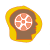

Now you are in the beginning of your mission. Here you can see the description of a challenge you are facing in this mission. Please, read it carefully in order to know what this mission is about and what do you have to do next. Look also through the learning object named "Welcome to SCY-lab" in order to familiarize yourself with the learning environment.
| When you have finished, open the mission map and move next to the Concept map space in order to make your initial concept map. | |
| Then look through the task for making video report and decide when to complete it (click in the misson map on the Video report icon). | |
| After that you should select first inquiry cycle (click in the misson map on the Hypotheses icon). |  |
Good luck to you on this adventure!
Learning goals
After a successful mission accomplishment, you are able to act as a researcher and:
| • | identify problems from narratives and videos based on everyday situations; |
| • | search and analyse critically background information; |
| • | formulate hypotheses that contain dependent and independent variables; |
| • | plan experiments for testing your hypotheses; |
| • | carry out virtual or real experiments; |
| • | analyse, visualise and interpret data gathered from your experiments; |
| • | relate your research findings with the hypotheses and initial problem; |
| • | explain the relations between different parameters of an aquatic ecosystem; |
| • | use the mission-specific concepts correctly in biology, physics and chemistry; |
| • | effectively organise your work; |
| • | plan and monitor your learning process and evaluate it properly. |